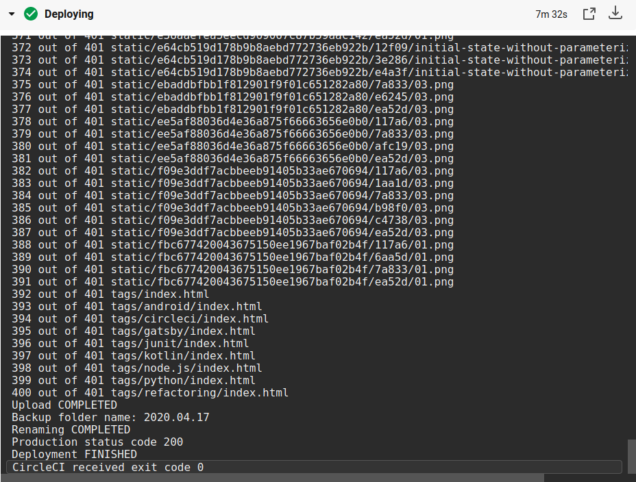
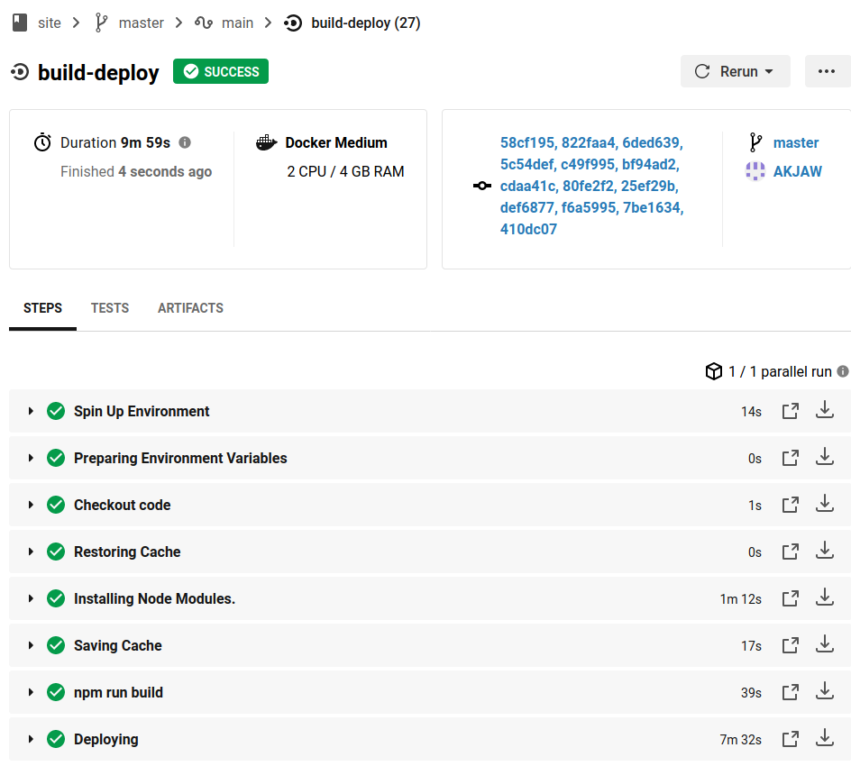

Preface
The last version of my website was made with Gatsby. Deploying a Gatsby website is as easy as running one command (gatsby build) and placing the created folder on a server.
My current hosting service gives me access to my server through FTP and SSH. Unfortunately I do not have access to the sudo command which means that I can’t Install anything from the command line. This limitation forces me to upload a new version of my site with the use of FTP. By trail and error I learned to always save the previous version of my site if I ever needed a rollback.
As you can guess, my site deployment strategy requires a lot of manual steps:
1. Build the site with **gatsby build** 2. Connect to the FTP server 3. Upload the new build 4. Rename the current production for backup 5. Make the uploaded build the new production
It might not seem like a lot, but it will add up fast. I thought about automating this process, the official Gatsby documentation lists a lot of option, but none suited my needs, because I wanted to keep my current hosting service without moving my domain.
I tried out Netlify with the idea of doing a reverse proxy, but I soon realized that I lack the experience needed for this, and found out that Netlify doesn’t really support this type of proxy.
After some more digging around I stumbled upon the idea of using a CI/CD pipeline for automatic build deployment.
CircleCi
CircleCi is a continuous integration and delivery service which can be hosted in the cloud for free. I didn't want to host my own CI/CD because of the maintenance and additional manual work.
After connecting my repository to CircleCI and providing the starter config, I also needed to set 3 environment variables to my project. The FTP address, username and password. These variables are encrypted and only visible from inside the CircleCi workflow.
CircleCi listens to repository changes and runs the workflow based on the config file placed in the repository. This means that to change the config there has to be a new commit that to triggers the workflow start. Because of this, testing it a little cumbersome, to avoid unnecessary commits I had to resort to a lot of forced commits.
Here’s the latest and I hope the final version of the config:
version: 2.1
orbs:
node: circleci/node@2.0.2
jobs:
build-deploy:
executor:
name: node/default
tag: '12.16.1'
steps:
- checkout
- node/install-packages
- run: npm run build
- run:
name: Deploying
command: node ./ftp-deploy.js $FTP_ADDRESS $FTP_USER $FTP_PASSWORD
workflows:
version: 2
main:
jobs:
- build-deploy:
filters:
branches:
only: masterWithout delving into a lot of details, the build-deploy job is only called on new commits in the master branch which means deployment only happens on that branch. The executor checkouts to the master branch and installs all required node packages with node/install-packages. After that it builds the project and runs the ftp-deploy.js with the 3 environment variables passed in as command line arguments. This allows the script to connect to the FTP server without hard-coding any credentials.
This is my first time using such a service, so my solution is probably far from perfect, but as of now I’m happy with it.
Node.js
The ftp-deploy.js is the star of the show, it is responsible for all the logic related to the deployment. The script is a little complicated, but I will try to split it into digestible slices. If you want to see the whole script click here
Starting from the top of the source file, here are the dependencies and constants:
const FtpDeploy = require("ftp-deploy")
const ftp = require("basic-ftp")
const basicFtpClient = new ftp.Client()
const https = require('https');
const LOCAL_BUILD_DIRECTORY = "public"
const DEPLOY_DIRECTORY_NAME = "temp"
const PRODUCTION_DIRECTORY_NAME = "master"
const BROKEN_BUILD = "broken"
const PRODUCTION_URL = "https://akjaw.com/"
const [ host, user, password ] = process.argv.slice(2)dependencies
- ftp-deploy is used for uploading the files to the FTP server. I tried to do it with other libraries, but this one offered me the most flexibility for this particular task.
- basic-ftp is used for listing renaming directories on the server, take a note that a global instance of its client is created.
- https is for checking if my website up (200 OK) after the deployment.
constants
- LOCAL_BUILD_DIRECTORY - directory that is sent to the server.
- DEPLOY_DIRECTORY_NAME - name of the uploaded directory on the server.
- PRODUCTION_DIRECTORY_NAME - directory for the live site.
- BROKEN_BUILD - directory name for a build which doesn’t work.
- PRODUCTION_URL - the url for my site.
host, user, password correspond to the environment variables passed in through the command line
Here’s the function that directs the deployment flow:
function main() {
return uploadBuildDirectory()
.catch(error => onError("Upload", error))
.then(() => renameFtpDirectories())
.catch(error => onError("Rename", error))
.then(async backupDirectoryName => {
const isLive = await isProductionLive()
if(!isLive) return rollBackProduction(backupDirectoryName)
})
.catch(error => onError("Rollback", error))
.then(() => {
console.log("Deployment FINISHED")
basicFtpClient.close()
process.exit(0)
})
}After every deployment step there is a catch block which stops the execution of the script, because a partially uploaded build or badly renamed folders can break the live site. Along with the script exit, the global ftp resource is also cleared. I’m not sure if this is necessary, but it’s better to be safe than sorry.
function onError(name, error){
console.log(`${name} FAILED`)
console.log(error)
fail()
}
function fail() {
basicFtpClient.close()
process.exit(1)
}process.exit takes in a number parameter which refers to the exit code. An exit code of 0 means that everything went fine, but a positive number means an error. In this case an exit code of 1 is an Uncaught Fatal Exception.
Here’s the break-down of the script flow without any errors:
1. Upload the build directory to the FTP server 2. Rename the current production directory and then the uploaded directory, at the end return the name of the old renamed production directory 3. Check if the new build works on production, if not, then rollback the changes by reversing the second step 4. Finish the deployment by closing any resources and exiting with a normal exit code.
Uploading the build directory
function uploadBuildDirectory(){
const config = {
host,
user,
password,
localRoot: `./${LOCAL_BUILD_DIRECTORY}`,
remoteRoot: `./${DEPLOY_DIRECTORY_NAME}`,
include: ["*", "**/*"]
}
const ftpDeploy = new FtpDeploy()
ftpDeploy.on("uploading", data => {
const { totalFilesCount, transferredFileCount, filename } = data
console.log(`${transferredFileCount} out of ${totalFilesCount} ${filename}`)
})
ftpDeploy.on("upload-error", data => {
console.log(data.err)
throw new Error("Upload FAILED")
})
return ftpDeploy
.deploy(config)
.then(() => console.log(`Upload COMPLETED`))
}All the heavy lifting is done by ftp-deploy, I only specify the credentials, directories and log some information about the files during the upload. Even If one file is not uploaded correctly it will probably break the site, so an error is thrown to stop the deployment.
Renaming both of the directories
async function renameFtpDirectories(){
await basicFtpClient.access({ host, user, password })
const directories = await basicFtpClient.list(".")
const backupDirectoryName = createBackupDirectoryName(directories)
console.log(`Backup folder name: ${backupDirectoryName}`)
await basicFtpClient.rename(PRODUCTION_DIRECTORY_NAME, backupDirectoryName)
await basicFtpClient.rename(DEPLOY_DIRECTORY_NAME, PRODUCTION_DIRECTORY_NAME)
console.log("Renaming COMPLETED")
return backupDirectoryName
}This function uses the global basicFtpClient, which is closed on any failure during the deployment flow. The only reason I made it global is to not overcomplicate the code and pass it as a parameter everywhere.
On my hosting, I keep the backups of all previous site versions, their directory name refers to their upload date in this format “YYYY.MM.DD”. But what happens if there is already a directory with that name? createBackupDirectoryName solves this issue:
function createBackupDirectoryName(directories) {
const productionDirectory = directories
.find(fileInfo => fileInfo.name === PRODUCTION_DIRECTORY_NAME)
const formattedDate = formatDate(productionDirectory.modifiedAt)
const numberOfDateOccurrences = directories
.filter(fileInfo => fileInfo.name.includes(formattedDate))
.length
if(numberOfDateOccurrences === 0){
return formattedDate
} else {
return `${formattedDate}_${numberOfDateOccurrences + 1}`
}
}
function formatDate(date) {
const month = date.getMonth() + 1
const paddedMonth = month.toString().padStart(2, "0")
const paddedDay = date.getDate().toString().padStart(2, "0")
return `${date.getFullYear()}.${paddedMonth}.${paddedDay}`
}This function gets a list of all the directories on the FTP server as a parameter. To correctly make a backup of the production directory I need its modification date. I use the find function to iterate the list and find the production directory, the modification date is then formatted to the correct format. A simple glimpse in the formatDate shows how intuitive it is to work with dates in plain JavaScript :). Once I have the correct directory name I need to check if there are already some directories with the same name/date. If this is the case, I add a postfix as to not overwrite anything.
The rest is as easy as swapping the production directory and returning the backupDirectoryName for the possible rollback:
await basicFtpClient.rename(PRODUCTION_DIRECTORY_NAME, backupDirectoryName)
await basicFtpClient.rename(DEPLOY_DIRECTORY_NAME, PRODUCTION_DIRECTORY_NAME)
console.log("Renaming COMPLETED")
return backupDirectoryNameChecking the production website
Just to be sure everything went as planned, I check if my site is live:
...
.then(async backupDirectoryName => {
const isLive = await isProductionLive()
if(!isLive) return rollBackProduction(backupDirectoryName)
})
...
function isProductionLive() {
return new Promise((resolve) => {
https
.get(PRODUCTION_URL, res => {
console.log(`Production status code ${res.statusCode}`)
resolve(res.statusCode === 200)
})
.on("error", _ => {
resolve(false)
})
})
}
async function rollBackProduction(backupDirectoryName){
await basicFtpClient.rename(PRODUCTION_DIRECTORY_NAME, BROKEN_BUILD)
await basicFtpClient.rename(backupDirectoryName, PRODUCTION_DIRECTORY_NAME)
console.log(`Rollback COMPLETED`)
fail()
}I simply connect to my website and check the status code it returns, if there are no errors it should be 200 OK. I know this is far from perfect, but at least it lets me sleep at night. If the website returns a different status code it might mean my server is down or something is wrong with the build. In either case I roll back the build by simply renaming the directories again. I also call the fail method to notify CircleCi that something went wrong.
Conclusion
I know that my way of deployment is far from perfect, and that there are probably better ways of doing it. Nonetheless, I’m happy with the result and the experience I gained along the way. The first version of this post will be uploaded with CircleCi, then I will provide some screenshots from the panel.


As you can see this workflow takes quite a bit of time, but I don’t think I will ever exceed the free CircleCi limit with it. By my calculation I can have about 20+ deployments weekly, so even if I add some tests to the workflow, I still don’t have to worry about it.
The whole script or a gist:
const FtpDeploy = require("ftp-deploy")
const ftp = require("basic-ftp")
const basicFtpClient = new ftp.Client()
const https = require('https');
const LOCAL_BUILD_DIRECTORY = "public"
const DEPLOY_DIRECTORY_NAME = "temp"
const PRODUCTION_DIRECTORY_NAME = "master"
const BROKEN_BUILD = "broken"
const PRODUCTION_URL = "https://akjaw.com/"
const [ host, user, password ] = process.argv.slice(2)
function main() {
return uploadBuildDirectory()
.catch(error => onError("Upload", error))
.then(() => renameFtpDirectories())
.catch(error => onError("Rename", error))
.then(async backupDirectoryName => {
const isLive = await isProductionLive()
if(!isLive) return rollBackProduction(backupDirectoryName)
})
.catch(error => onError("Rollback", error))
.then(() => {
console.log("Deploy FINISHED")
basicFtpClient.close()
process.exit(0)
})
}
function uploadBuildDirectory(){
const config = {
host,
user,
password,
localRoot: `./${LOCAL_BUILD_DIRECTORY}`,
remoteRoot: `./${DEPLOY_DIRECTORY_NAME}`,
include: ["*", "**/*"]
}
const ftpDeploy = new FtpDeploy()
ftpDeploy.on("uploading", data => {
const { totalFilesCount, transferredFileCount, filename } = data
console.log(`${transferredFileCount} out of ${totalFilesCount} ${filename}`)
})
ftpDeploy.on("upload-error", data => {
console.log(data.err)
throw new Error("Upload FAILED")
})
return ftpDeploy
.deploy(config)
.then(() => console.log(`Upload COMPLETED`))
}
async function renameFtpDirectories(){
await basicFtpClient.access({ host, user, password })
const directories = await basicFtpClient.list(".")
const backupDirectoryName = createBackupDirectoryName(directories)
console.log(`Backup folder name: ${backupDirectoryName}`)
await basicFtpClient.rename(PRODUCTION_DIRECTORY_NAME, backupDirectoryName)
await basicFtpClient.rename(DEPLOY_DIRECTORY_NAME, PRODUCTION_DIRECTORY_NAME)
console.log("Renaming COMPLETED")
return backupDirectoryName
}
function createBackupDirectoryName(directories) {
const productionDirectory = directories
.find(fileInfo => fileInfo.name === PRODUCTION_DIRECTORY_NAME)
const formattedDate = formatDate(productionDirectory.modifiedAt)
const numberOfDateOccurrences = directories
.filter(fileInfo => fileInfo.name.includes(formattedDate))
.length
if(numberOfDateOccurrences === 0){
return formattedDate
} else {
return `${formattedDate}_${numberOfDateOccurrences + 1}`
}
}
function formatDate(date) {
const month = date.getMonth() + 1
const paddedMonth = month.toString().padStart(2, "0")
const paddedDay = date.getDate().toString().padStart(2, "0")
return `${date.getFullYear()}.${paddedMonth}.${paddedDay}`
}
function isProductionLive() {
return new Promise((resolve) => {
https
.get(PRODUCTION_URL, res => {
console.log(`Production status code ${res.statusCode}`)
resolve(res.statusCode === 200)
})
.on("error", _ => {
resolve(false)
})
})
}
async function rollBackProduction(backupDirectoryName){
await basicFtpClient.rename(PRODUCTION_DIRECTORY_NAME, BROKEN_BUILD)
await basicFtpClient.rename(backupDirectoryName, PRODUCTION_DIRECTORY_NAME)
console.log(`Rollback COMPLETED`)
fail()
}
function onError(name, error){
console.log(`${name} FAILED`)
console.log(error)
fail()
}
function fail() {
basicFtpClient.close()
process.exit(1)
}
main()